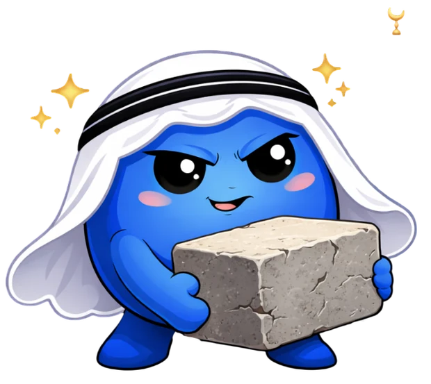

Pilih Media
Klik kartunya, langsung gas!
Pengunjung Titik Arab 🌍
Memuat…

Bantu aku angkat batu bata berikutnya 🧱
Media interaktif bahasa Arab. Gratis, buka dari HP. Gak ribet!
Klik kartunya, langsung gas!
Memuat…

Bantu aku angkat batu bata berikutnya 🧱